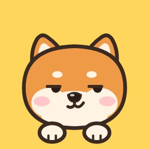

测测你是哪种性格的小狗
人和狗共享 4 个性格维度24 道题，找出藏在你身体里的那只小狗
原创 · 免费 · 不用登录 · 不收集你的答案
测完欢迎来评论区报出你的狗种，看看谁和你是同款！
原创测试，转载请注明出处，搬运必究。
适用于所有两脚兽。仅供娱乐，不是心理诊断；犬种只是比喻。
凭第一直觉选，别想太久～
正在嗅嗅你的答案…
4 个维度 × 高低两极 = 16 种。点开看看你的朋友是哪只？